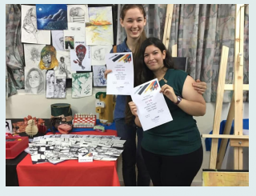

Hi, I'm Shaked. I specialize in User-Centered Design that balances empathy with logic. A graduate of the Shenkar School of Practical Engineers, I apply research-driven processes to craft interfaces that are both functional and visually precise.
My approach to design is rooted in years of hands-on experience with people. Before designing screens, I was the person answering the phone. Working in Technical Support and Service roles at companies like SodaStream and High-Tech Zone taught me to hear the frustration behind the complaints. I didn't just solve immediate technical issues; I listened to the people on the other end of the line to understand where the product failed them.
My empathy was further deepened while working as a staff member in a special education kindergarten for children with autism. That experience taught me to be attentive to needs that aren't always spoken.
I believe that true User Experience begins with listening—really listening—to the customer's voice. This perspective drives me to design interfaces that solve real problems and prevent frustration before it even starts. I'm naturally curious, detail-oriented, and comfortable working through ambiguity. I'm currently seeking an opportunity to join a product team where I can contribute my skills and work on products that place people at the center.

Sorry, this is the best photo I could find.